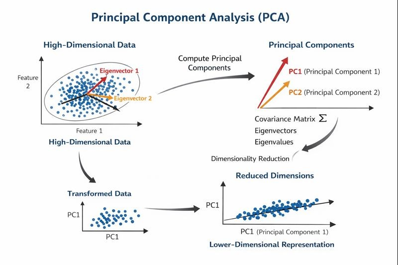

Dimensionality Reduction: Principal Component Analysis (PCA)
1. Introduction to Principal Component Analysis
Principal Component Analysis (PCA) is a dimensionality reduction technique used in unsupervised learning to transform a dataset with many variables into a smaller set that still contains most of the essential information. PCA helps eliminate less important or redundant features, as a result it leads to faster training and inference. It also makes data visualization easier, especially for high-dimensional datasets. High-dimensional data often includes correlated features, which increase computational complexity and make interpretation difficult. PCA simplifies this problem by transforming the original variables into a new set of uncorrelated variables called principal components, while retaining as much of the original information as possible (Géron, 2019🔗; Jolliffe, 2002🔗). Geometrically, PCA rotates the coordinate system of the dataset so that the new axes align with the directions of maximum variation in the data.
2. Objective of PCA
The main objective of PCA is to identify directions in the feature space along which the variance of the data is maximized. Features with higher variance carry more information about the structure of the dataset. Therefore, PCA identifies directions where the data varies the most and projects the data onto those directions. These directions represent the most significant patterns in the dataset. In high-dimensional datasets, many features may contain redundant information due to correlation. PCA identifies new axes called principal components, which represent directions of maximum variance in the data.
The dataset is initially represented in a high-dimensional space as shown in Figure 1. PCA then determines new orthogonal axes that capture the largest spread of the data. The original data points are projected onto these new axes, resulting in a reduced-dimensional dataset that still preserves most of the important information (Murphy, 2012🔗).
3. Geometric Interpretation of PCA
Principal Component Analysis (PCA) can also be understood from a geometric perspective. In a multidimensional dataset, each feature represents an axis in a coordinate system. The data points are distributed within this high-dimensional space, often showing correlations among features.
PCA transforms the coordinate system by rotating the original axes to align with the directions of maximum variance in the data. These new axes are called principal components, and they provide a more compact representation of the dataset.
The first principal component (PC1) represents the direction along which the variance of the data is maximized. The second principal component (PC2) is orthogonal to the first and captures the second-largest variance. Subsequent principal components follow the same principle, each accounting for progressively smaller amounts of variance.
By projecting the original data points onto these new axes, PCA transforms the dataset into a new coordinate system that preserves the most significant patterns while reducing dimensionality. This geometric transformation allows complex high-dimensional data to be represented using fewer dimensions while retaining most of the important information. As illustrated in Figure 1, PCA identifies the directions of maximum variance using eigenvectors derived from the covariance matrix and projects the data onto these principal components to obtain a lower-dimensional representation.

Figure 1: Geometric interpretation of Principal Component Analysis (PCA) showing the transformation of high-dimensional data into principal components aligned with directions of maximum variance.
4. Data Standardization in PCA
Before applying PCA, it is essential to standardize the dataset so that all features are on the same scale. Since PCA is based on variance, features with larger numerical ranges can dominate the principal components if scaling is not applied. Standardization transforms each feature as:
where μ is the mean and σ is the standard deviation.
This ensures that all features contribute equally to the covariance structure of the data.
5. Mathematical Foundation
The mathematical foundation of PCA lies in linear algebra and statistics, particularly in covariance, eigenvectors, and eigenvalues.
Covariance
Covariance measures how two features vary together. It helps in understanding the relationship between variables in the dataset. If two features increase together, the covariance is positive; if one increases while the other decreases, it is negative.
For two variables X and Y, covariance is defined as:
For a dataset with multiple features, a covariance matrix is constructed:
This covariance matrix captures how all features vary with respect to each other and forms the basis for PCA.
Eigenvectors and Eigenvalues
Eigenvectors define the directions of maximum variance in the data, while eigenvalues indicate the amount of variance explained by each direction (Jolliffe, 2002🔗).
For a square matrix A, an eigenvector v and its corresponding eigenvalue λ satisfy the equation:
In PCA, eigenvectors and eigenvalues are derived from the covariance matrix of the dataset. The covariance matrix captures the relationships between all pairs of features and indicates how features vary together. PCA analyzes this matrix to identify directions where the data spreads the most. Eigenvectors associated with larger eigenvalues correspond to more informative principal components because they capture more variance in the data (Murphy, 2012🔗; J. Brownlee, PCA for dimensionality reduction🔗).
Projection onto Eigenvectors
Once eigenvectors are computed, the original data is projected onto these directions to obtain principal components.
If W is the matrix of selected eigenvectors, the transformed data is computed as:
Here:
- X = original standardized data
- W = eigenvector matrix
- Z = transformed data in lower dimensions
This operation maps the data into a new coordinate system defined by principal components.
6. Dimensionality Reduction
By projecting the dataset onto a smaller number of important principal components, PCA reduces the number of features while keeping most of the useful information. The original high-dimensional data points are projected onto a lower-dimensional subspace formed by the selected principal components.
A subspace refers to a reduced feature space within the original high-dimensional space that preserves the most significant structure of the data. In PCA, this subspace is spanned by the top k eigenvectors (principal components), which capture the maximum variance in the dataset.
Only the components that capture a large amount of variation in the data are selected. This process simplifies the dataset and helps reduce noise, making machine learning models easier to train and interpret (Géron, 2019🔗; GeeksforGeeks🔗).
7. Algorithm
The following steps describe the standard workflow used to perform Principal Component Analysis.
Step 1: Standardize the Data
Before applying PCA, the dataset is standardized so that each feature contributes equally to the analysis.
Where μ is the mean of the feature and σ is the standard deviation. After standardization, all features have a mean of 0 and a standard deviation of 1.
Step 2: Compute the Covariance Matrix
After standardization, the covariance matrix is computed to measure how features vary with respect to each other.
The resulting covariance matrix has a size of d × d, where d represents the number of features. Each element [i, j] indicates the covariance between feature i and feature j.
Step 3: Calculate Eigenvalues and Eigenvectors
The eigenvalues and eigenvectors of the covariance matrix are computed to identify the principal directions of the data.
Where λ represents the eigenvalue (amount of variance captured) and v represents the eigenvector (direction of the new axis).
Step 4: Sort Eigenvectors by Eigenvalues
The eigenvectors are sorted in descending order based on their corresponding eigenvalues. The eigenvector with the largest eigenvalue represents the direction of maximum variance, followed by the next largest, which is orthogonal to the first.
Step 5: Compute Explained Variance Ratio
This ratio indicates the proportion of total variance explained by each principal component. The explained variance ratios are often visualized using a scree plot to determine how many principal components should be retained.
Step 6: Select Number of Principal Components (k)
The number of principal components k is selected based on the cumulative explained variance. A common approach is to select k such that the cumulative variance exceeds a predefined threshold (e.g., 95%).
Step 7: Construct Projection Matrix
A projection matrix W is created using the top k eigenvectors as its columns.
Step 8: Transform the Dataset
The transformed dataset now has k dimensions instead of the original d dimensions while preserving the most important variance in the data.
8. Merits of PCA
- Makes large and complex datasets easier to analyze by reducing feature dimensionality.
- Removes redundancy caused by correlated variables.
- Improves computational efficiency for machine learning algorithms.
- Helps visualize high-dimensional data in two or three dimensions.
9. Demerits of Using PCA
- The new features created by PCA (principal components) are linear combinations of original features and are difficult to interpret.
- Some useful information may be lost during dimensionality reduction.
- PCA assumes linear relationships between variables and may not work well for datasets with complex non-linear patterns.
- PCA is sensitive to outliers, which can influence the direction of principal components.
- PCA is sensitive to the scaling of the data, so proper standardization is required (Jolliffe, 2002🔗).